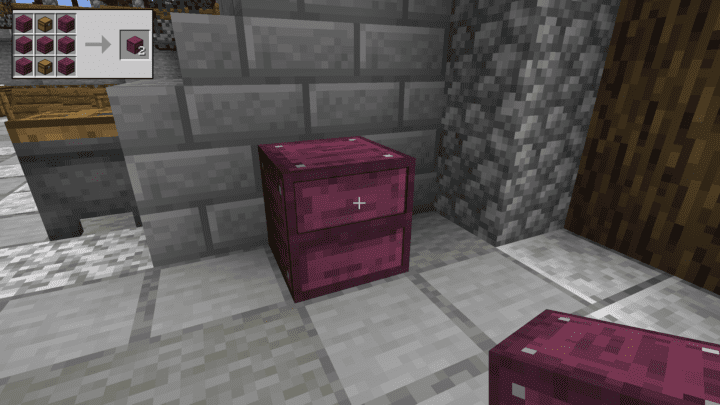

Functional Storage is an alternate take on the already existing Storage Drawers mod with some interesting additional functionalities and a new look for the drawers. It allows you to add a significant amount more of one, two, or four items at a time and will show an icon of that block as well as how many are in a particular drawer. The purpose for this would be to have one block that can hold an incredible amount of items instead of several chests with a limited capacity. You can even upgrade each of these drawers to hold even more stacks up to several billion at one time!
The base drawer is a 1×1 block that will hold one item at a time. Without any upgrades it will hold 2,000 blocks and you can simply right click the item from your hand to drop it into the drawer. You can do this over and over until you hit the limit. And if you want to remove items from the drawer there are two different methods to do so. If you left click the item on the front of the drawer you will pull 1 at a time and if you want to pull everything out then you can hold shift and left click and they will go into your own inventory.
The next basic drawer is the 1×2 drawer and it will function the same as the 1×1 drawer except it will hold two different types of blocks and half the amount at 1,000 each. These can also be upgraded up to 1.1 billion items for each that are stored in it. These will show both blocks on the outside as well.
The last basic drawer is the 2×2 and just like the first two it will function the same only with 1/4 the amount per slot and comes to 512 per item. All of these drawers can be made from any of the standard wood types so you can customize the colors as needed.
This mod also adds fluid storage and these will function just like the three basic drawers except for storing fluids only. The 1×1 fluid drawer can hold 32 buckets, the 1×2 drawer can hold 16 of each fluid, and the 2×2 drawer can hold 8 of each fluid all before upgrades which can then hold up to 2.1 million buckets total! You will also see the fluids on the front of these drawers for easy visibility.
What makes this mod that much more incredible is connecting them all to a storage controller. You can link all of your drawers to a storage controller by placing it nearby and then crafting a linking tool. With the linking tool in hand, right click on the storage controller and then right click on every drawer you want to link it to. When your drawers are linked it will act as a single source for dropping items into their specific spots. When you place your items in their desired drawers they will always be the designated spots for any more items you want to add and all you have to do next is drop your items by right clicking them on just the storage controller. It will automatically put them in their specified drawers to make for a much quicker inventory dump!
If you want to increase the storage of these drawers there are four different upgrade tiers ranging from copper to netherite. They will multiply the amount that can be stored and range from copper multiplying items by 8 and fluids by 4 up to netherite multiplying items by 32 and fluids by 16. You can add four of these per drawer so the amount each drawer can hold can get pretty massive for only taking up one block space.
There are additional upgrades that you can also try with this mod like the collecting upgrade that will simply grab items dropped on the ground and makes for adding items an even easier task than going through them one by one. This mod does require the Titanium API to be installed as well and can be found here.